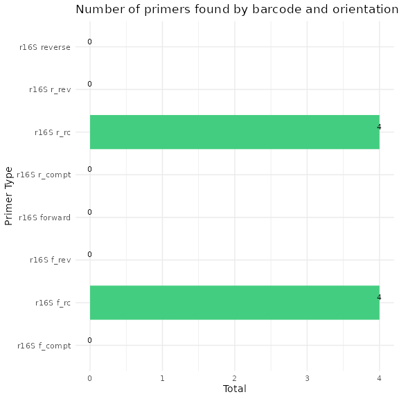
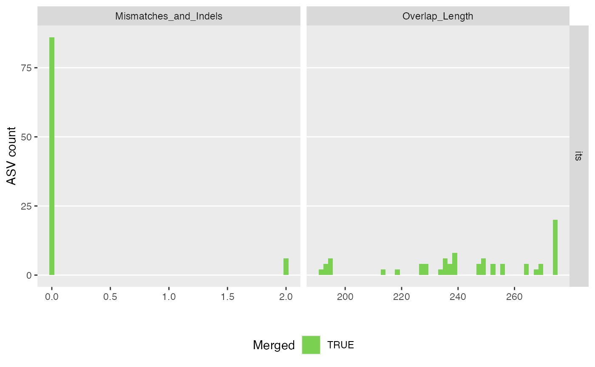
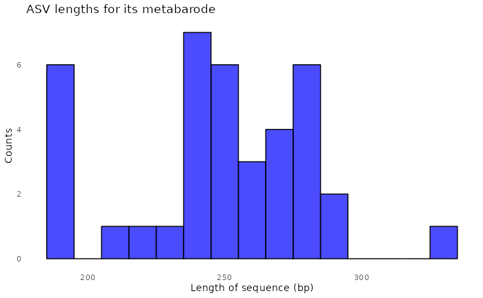
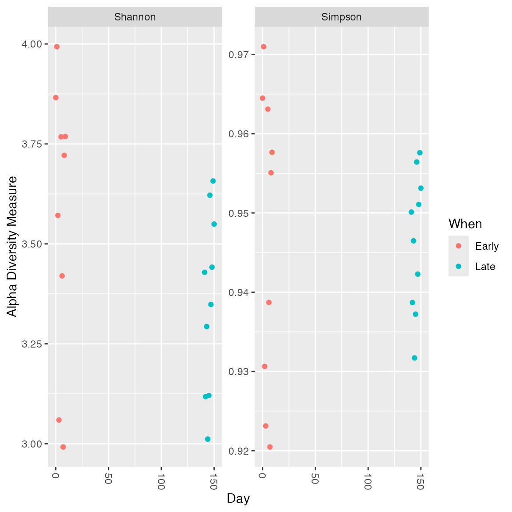
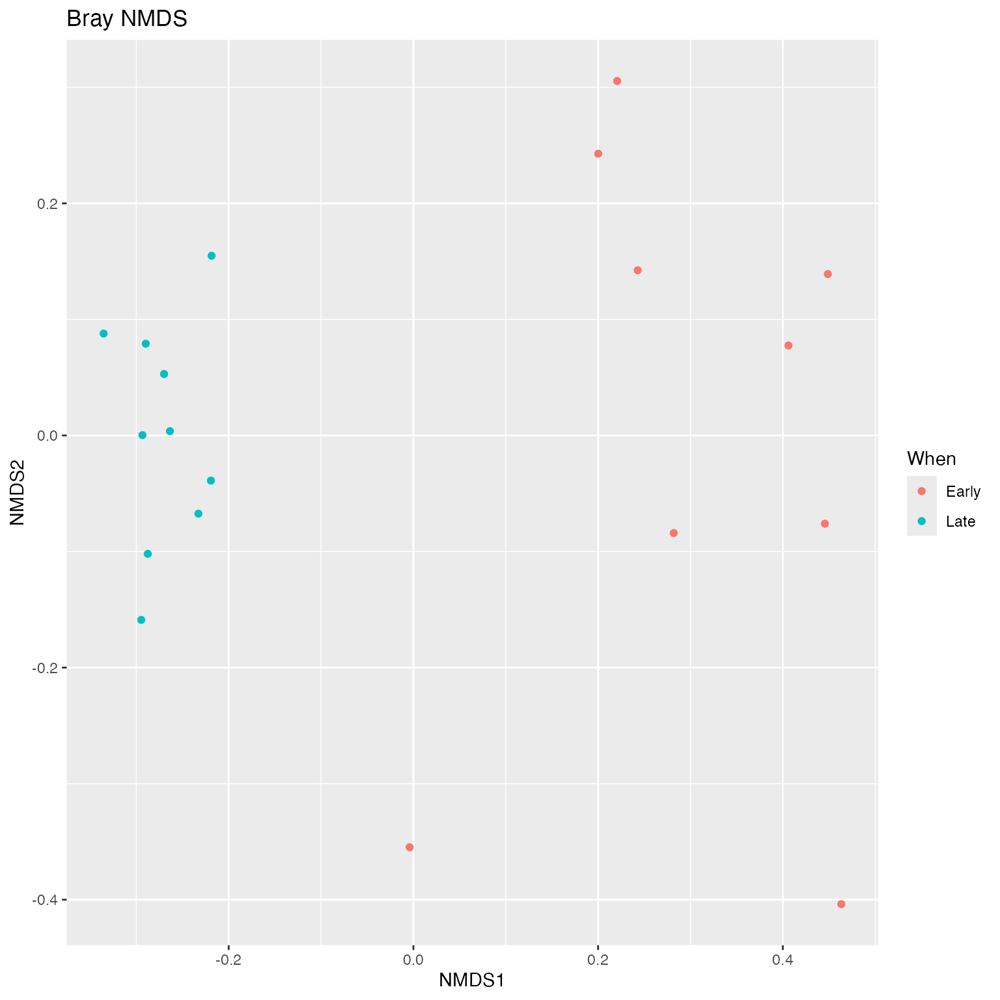
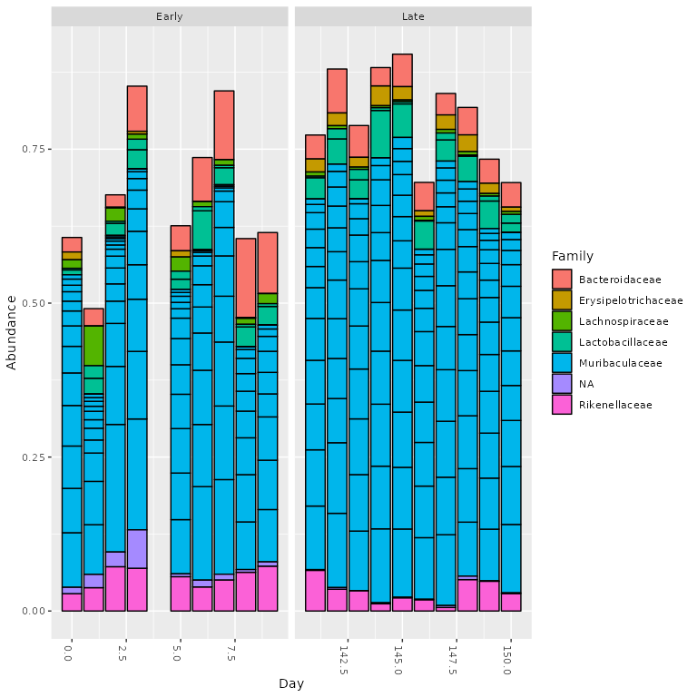

16S Mothur SOP Validation
Source:vignettes/03_16S_mothur_validation.Rmd
03_16S_mothur_validation.RmdDemonstration of how to use demulticoder on a dataset that is actually three separate datasets (RPS10, ITS, and 16S) at once
Input metadata and primerinfo_params files are in data folder
The only required columns are the first with sample names, and the second with the primer name/barcode used. The subsequent columns are user-specific columns for downstream steps metadata.csv file
| sample_name | primer_name | Day | When |
|---|---|---|---|
| F3D0 | r16S | 0 | Early |
| F3D1 | r16S | 1 | Early |
| F3D141 | r16S | 141 | Late |
| F3D142 | r16S | 142 | Late |
| F3D143 | r16S | 143 | Late |
| F3D144 | r16S | 144 | Late |
| F3D145 | r16S | 145 | Late |
| F3D146 | r16S | 146 | Late |
| F3D147 | r16S | 147 | Late |
| F3D148 | r16S | 148 | Late |
| F3D149 | r16S | 149 | Late |
| F3D150 | r16S | 150 | Late |
| F3D2 | r16S | 2 | Early |
| F3D3 | r16S | 3 | Early |
| F3D5 | r16S | 5 | Early |
| F3D6 | r16S | 6 | Early |
| F3D7 | r16S | 7 | Early |
| F3D8 | r16S | 8 | Early |
| F3D9 | r16S | 9 | Early |
| Mock | r16S | NA | NA |
I then included the necessary second file with the name of the barcode selected, primer sequences, and the optional DADA2 parameter options. I referenced the DADA2 tutorial to select the proper parameter options.
Note, primers were already trimmed from reads, but just to be certain, I included the Earth Microbiome primers described here, and a few primer sequences were still found within a small number of reads. primerinfo_params.csv
| primer_name | forward | reverse | already_trimmed | minCutadaptlength | multithread | verbose | maxN | maxEE_forward | maxEE_reverse | truncLen_forward | truncLen_reverse | truncQ | minLen | maxLen | minQ | trimLeft | trimRight | rm.lowcomplex | minOverlap | maxMismatch | min_asv_length | |
|---|---|---|---|---|---|---|---|---|---|---|---|---|---|---|---|---|---|---|---|---|---|---|
| 1 | r16S | GTGYCAGCMGCCGCGGTAA | GGACTACNVGGGTWTCTAAT | TRUE | 50 | TRUE | TRUE | 0 | 2 | 2 | 240 | 160 | 2 | 20 | Inf | 0 | 0 | 0 | 0 | 12 | 0 | 50 |
Step 1-Remove N’s and create directory structure for downstream steps
outputs<-prepare_reads(
data_directory = "~/benchmark_demulticoder/mothur_16S_sop/data",
output_directory = "~/benchmark_demulticoder/mothur_16S_sop/vignette_outputs",
tempdir_path = "~/benchmark_demulticoder/mothur_16S_sop/vignette_outputs",
tempdir_id = "temp_files",
overwrite_existing = TRUE)
#> Rows: 1 Columns: 22
#> ── Column specification ────────────────────────────────────────────────────────
#> Delimiter: ","
#> chr (3): primer_name, forward, reverse
#> dbl (16): minCutadaptlength, maxN, maxEE_forward, maxEE_reverse, truncLen_fo...
#> lgl (3): already_trimmed, multithread, verbose
#>
#> ℹ Use `spec()` to retrieve the full column specification for this data.
#> ℹ Specify the column types or set `show_col_types = FALSE` to quiet this message.
#> Rows: 1 Columns: 22
#> ── Column specification ────────────────────────────────────────────────────────
#> Delimiter: ","
#> chr (3): primer_name, forward, reverse
#> dbl (16): minCutadaptlength, maxN, maxEE_forward, maxEE_reverse, truncLen_fo...
#> lgl (3): already_trimmed, multithread, verbose
#>
#> ℹ Use `spec()` to retrieve the full column specification for this data.
#> ℹ Specify the column types or set `show_col_types = FALSE` to quiet this message.
#> Rows: 20 Columns: 4
#> ── Column specification ────────────────────────────────────────────────────────
#> Delimiter: ","
#> chr (3): sample_name, primer_name, When
#> dbl (1): Day
#>
#> ℹ Use `spec()` to retrieve the full column specification for this data.
#> ℹ Specify the column types or set `show_col_types = FALSE` to quiet this message.
#> Warning in get_read_names(paired_file_paths[1]) ==
#> get_read_names(paired_file_paths[2]): longer object length is not a multiple of
#> shorter object length
#> Creating output directory: /home/marthasudermann/benchmark_demulticoder/mothur_16S_sop/vignette_outputs/temp_files/prefiltered_sequences
Step 2-Run Cutadapt to remove primers and then trim reads with DADA2 filterAndTrim function
cut_trim(
outputs,
cutadapt_path="/usr/bin/cutadapt",
overwrite_existing = TRUE)
#> Running Cutadapt 3.5 for r16S sequence data
#> Already trimmed forward reads were appended to trimmed read directory, and they are located here: ~/benchmark_demulticoder/mothur_16S_sop/vignette_outputs/temp_files/trimmed_sequences/F3D0_R1_r16S.fastq.gz
#> Already trimmed reverse reads were appended to trimmed read directory, and they are located here: ~/benchmark_demulticoder/mothur_16S_sop/vignette_outputs/temp_files/trimmed_sequences/F3D0_R2_r16S.fastq.gz
#> Already trimmed forward reads were appended to trimmed read directory, and they are located here: ~/benchmark_demulticoder/mothur_16S_sop/vignette_outputs/temp_files/trimmed_sequences/F3D1_R1_r16S.fastq.gz
#> Already trimmed reverse reads were appended to trimmed read directory, and they are located here: ~/benchmark_demulticoder/mothur_16S_sop/vignette_outputs/temp_files/trimmed_sequences/F3D1_R2_r16S.fastq.gz
#> Already trimmed forward reads were appended to trimmed read directory, and they are located here: ~/benchmark_demulticoder/mothur_16S_sop/vignette_outputs/temp_files/trimmed_sequences/F3D141_R1_r16S.fastq.gz
#> Already trimmed reverse reads were appended to trimmed read directory, and they are located here: ~/benchmark_demulticoder/mothur_16S_sop/vignette_outputs/temp_files/trimmed_sequences/F3D141_R2_r16S.fastq.gz
#> Already trimmed forward reads were appended to trimmed read directory, and they are located here: ~/benchmark_demulticoder/mothur_16S_sop/vignette_outputs/temp_files/trimmed_sequences/F3D142_R1_r16S.fastq.gz
#> Already trimmed reverse reads were appended to trimmed read directory, and they are located here: ~/benchmark_demulticoder/mothur_16S_sop/vignette_outputs/temp_files/trimmed_sequences/F3D142_R2_r16S.fastq.gz
#> Already trimmed forward reads were appended to trimmed read directory, and they are located here: ~/benchmark_demulticoder/mothur_16S_sop/vignette_outputs/temp_files/trimmed_sequences/F3D143_R1_r16S.fastq.gz
#> Already trimmed reverse reads were appended to trimmed read directory, and they are located here: ~/benchmark_demulticoder/mothur_16S_sop/vignette_outputs/temp_files/trimmed_sequences/F3D143_R2_r16S.fastq.gz
#> Already trimmed forward reads were appended to trimmed read directory, and they are located here: ~/benchmark_demulticoder/mothur_16S_sop/vignette_outputs/temp_files/trimmed_sequences/F3D144_R1_r16S.fastq.gz
#> Already trimmed reverse reads were appended to trimmed read directory, and they are located here: ~/benchmark_demulticoder/mothur_16S_sop/vignette_outputs/temp_files/trimmed_sequences/F3D144_R2_r16S.fastq.gz
#> Already trimmed forward reads were appended to trimmed read directory, and they are located here: ~/benchmark_demulticoder/mothur_16S_sop/vignette_outputs/temp_files/trimmed_sequences/F3D145_R1_r16S.fastq.gz
#> Already trimmed reverse reads were appended to trimmed read directory, and they are located here: ~/benchmark_demulticoder/mothur_16S_sop/vignette_outputs/temp_files/trimmed_sequences/F3D145_R2_r16S.fastq.gz
#> Already trimmed forward reads were appended to trimmed read directory, and they are located here: ~/benchmark_demulticoder/mothur_16S_sop/vignette_outputs/temp_files/trimmed_sequences/F3D146_R1_r16S.fastq.gz
#> Already trimmed reverse reads were appended to trimmed read directory, and they are located here: ~/benchmark_demulticoder/mothur_16S_sop/vignette_outputs/temp_files/trimmed_sequences/F3D146_R2_r16S.fastq.gz
#> Already trimmed forward reads were appended to trimmed read directory, and they are located here: ~/benchmark_demulticoder/mothur_16S_sop/vignette_outputs/temp_files/trimmed_sequences/F3D147_R1_r16S.fastq.gz
#> Already trimmed reverse reads were appended to trimmed read directory, and they are located here: ~/benchmark_demulticoder/mothur_16S_sop/vignette_outputs/temp_files/trimmed_sequences/F3D147_R2_r16S.fastq.gz
#> Already trimmed forward reads were appended to trimmed read directory, and they are located here: ~/benchmark_demulticoder/mothur_16S_sop/vignette_outputs/temp_files/trimmed_sequences/F3D148_R1_r16S.fastq.gz
#> Already trimmed reverse reads were appended to trimmed read directory, and they are located here: ~/benchmark_demulticoder/mothur_16S_sop/vignette_outputs/temp_files/trimmed_sequences/F3D148_R2_r16S.fastq.gz
#> Already trimmed forward reads were appended to trimmed read directory, and they are located here: ~/benchmark_demulticoder/mothur_16S_sop/vignette_outputs/temp_files/trimmed_sequences/F3D149_R1_r16S.fastq.gz
#> Already trimmed reverse reads were appended to trimmed read directory, and they are located here: ~/benchmark_demulticoder/mothur_16S_sop/vignette_outputs/temp_files/trimmed_sequences/F3D149_R2_r16S.fastq.gz
#> Already trimmed forward reads were appended to trimmed read directory, and they are located here: ~/benchmark_demulticoder/mothur_16S_sop/vignette_outputs/temp_files/trimmed_sequences/F3D150_R1_r16S.fastq.gz
#> Already trimmed reverse reads were appended to trimmed read directory, and they are located here: ~/benchmark_demulticoder/mothur_16S_sop/vignette_outputs/temp_files/trimmed_sequences/F3D150_R2_r16S.fastq.gz
#> Already trimmed forward reads were appended to trimmed read directory, and they are located here: ~/benchmark_demulticoder/mothur_16S_sop/vignette_outputs/temp_files/trimmed_sequences/F3D2_R1_r16S.fastq.gz
#> Already trimmed reverse reads were appended to trimmed read directory, and they are located here: ~/benchmark_demulticoder/mothur_16S_sop/vignette_outputs/temp_files/trimmed_sequences/F3D2_R2_r16S.fastq.gz
#> Already trimmed forward reads were appended to trimmed read directory, and they are located here: ~/benchmark_demulticoder/mothur_16S_sop/vignette_outputs/temp_files/trimmed_sequences/F3D3_R1_r16S.fastq.gz
#> Already trimmed reverse reads were appended to trimmed read directory, and they are located here: ~/benchmark_demulticoder/mothur_16S_sop/vignette_outputs/temp_files/trimmed_sequences/F3D3_R2_r16S.fastq.gz
#> Already trimmed forward reads were appended to trimmed read directory, and they are located here: ~/benchmark_demulticoder/mothur_16S_sop/vignette_outputs/temp_files/trimmed_sequences/F3D5_R1_r16S.fastq.gz
#> Already trimmed reverse reads were appended to trimmed read directory, and they are located here: ~/benchmark_demulticoder/mothur_16S_sop/vignette_outputs/temp_files/trimmed_sequences/F3D5_R2_r16S.fastq.gz
#> Already trimmed forward reads were appended to trimmed read directory, and they are located here: ~/benchmark_demulticoder/mothur_16S_sop/vignette_outputs/temp_files/trimmed_sequences/F3D6_R1_r16S.fastq.gz
#> Already trimmed reverse reads were appended to trimmed read directory, and they are located here: ~/benchmark_demulticoder/mothur_16S_sop/vignette_outputs/temp_files/trimmed_sequences/F3D6_R2_r16S.fastq.gz
#> Already trimmed forward reads were appended to trimmed read directory, and they are located here: ~/benchmark_demulticoder/mothur_16S_sop/vignette_outputs/temp_files/trimmed_sequences/F3D7_R1_r16S.fastq.gz
#> Already trimmed reverse reads were appended to trimmed read directory, and they are located here: ~/benchmark_demulticoder/mothur_16S_sop/vignette_outputs/temp_files/trimmed_sequences/F3D7_R2_r16S.fastq.gz
#> Already trimmed forward reads were appended to trimmed read directory, and they are located here: ~/benchmark_demulticoder/mothur_16S_sop/vignette_outputs/temp_files/trimmed_sequences/F3D8_R1_r16S.fastq.gz
#> Already trimmed reverse reads were appended to trimmed read directory, and they are located here: ~/benchmark_demulticoder/mothur_16S_sop/vignette_outputs/temp_files/trimmed_sequences/F3D8_R2_r16S.fastq.gz
#> Already trimmed forward reads were appended to trimmed read directory, and they are located here: ~/benchmark_demulticoder/mothur_16S_sop/vignette_outputs/temp_files/trimmed_sequences/F3D9_R1_r16S.fastq.gz
#> Already trimmed reverse reads were appended to trimmed read directory, and they are located here: ~/benchmark_demulticoder/mothur_16S_sop/vignette_outputs/temp_files/trimmed_sequences/F3D9_R2_r16S.fastq.gz
#> Already trimmed forward reads were appended to trimmed read directory, and they are located here: ~/benchmark_demulticoder/mothur_16S_sop/vignette_outputs/temp_files/trimmed_sequences/Mock_R1_r16S.fastq.gz
#> Already trimmed reverse reads were appended to trimmed read directory, and they are located here: ~/benchmark_demulticoder/mothur_16S_sop/vignette_outputs/temp_files/trimmed_sequences/Mock_R2_r16S.fastq.gz
Step 3-Core ASV inference step
make_asv_abund_matrix(
outputs,
overwrite_existing = TRUE)
#> 33513360 total bases in 139639 reads from 20 samples will be used for learning the error rates.
#> Initializing error rates to maximum possible estimate.
#> selfConsist step 1 ....................
#> selfConsist step 2
#> selfConsist step 3
#> selfConsist step 4
#> selfConsist step 5
#> Convergence after 5 rounds.
#> Error rate plot for the Forward read of primer pair r16S
#> Warning in scale_y_log10(): log-10 transformation introduced
#> infinite values.
#> Sample 1 - 7112 reads in 1978 unique sequences.
#> Sample 2 - 5299 reads in 1639 unique sequences.
#> Sample 3 - 5463 reads in 1477 unique sequences.
#> Sample 4 - 2914 reads in 904 unique sequences.
#> Sample 5 - 2941 reads in 939 unique sequences.
#> Sample 6 - 4312 reads in 1267 unique sequences.
#> Sample 7 - 6741 reads in 1756 unique sequences.
#> Sample 8 - 4560 reads in 1438 unique sequences.
#> Sample 9 - 15636 reads in 3589 unique sequences.
#> Sample 10 - 11412 reads in 2761 unique sequences.
#> Sample 11 - 12017 reads in 3021 unique sequences.
#> Sample 12 - 5032 reads in 1566 unique sequences.
#> Sample 13 - 18075 reads in 3707 unique sequences.
#> Sample 14 - 6250 reads in 1479 unique sequences.
#> Sample 15 - 4052 reads in 1195 unique sequences.
#> Sample 16 - 7369 reads in 1832 unique sequences.
#> Sample 17 - 4765 reads in 1183 unique sequences.
#> Sample 18 - 4871 reads in 1382 unique sequences.
#> Sample 19 - 6504 reads in 1709 unique sequences.
#> Sample 20 - 4314 reads in 897 unique sequences.
#> 22342240 total bases in 139639 reads from 20 samples will be used for learning the error rates.
#> Initializing error rates to maximum possible estimate.
#> selfConsist step 1 ....................
#> selfConsist step 2
#> selfConsist step 3
#> selfConsist step 4
#> selfConsist step 5
#> selfConsist step 6
#> selfConsist step 7
#> Convergence after 7 rounds.
#> Error rate plot for the Reverse read of primer pair r16S
#> Warning in scale_y_log10(): log-10 transformation introduced
#> infinite values.
#> Sample 1 - 7112 reads in 1659 unique sequences.
#> Sample 2 - 5299 reads in 1349 unique sequences.
#> Sample 3 - 5463 reads in 1335 unique sequences.
#> Sample 4 - 2914 reads in 853 unique sequences.
#> Sample 5 - 2941 reads in 880 unique sequences.
#> Sample 6 - 4312 reads in 1286 unique sequences.
#> Sample 7 - 6741 reads in 1803 unique sequences.
#> Sample 8 - 4560 reads in 1265 unique sequences.
#> Sample 9 - 15636 reads in 3413 unique sequences.
#> Sample 10 - 11412 reads in 2522 unique sequences.
#> Sample 11 - 12017 reads in 2771 unique sequences.
#> Sample 12 - 5032 reads in 1415 unique sequences.
#> Sample 13 - 18075 reads in 3290 unique sequences.
#> Sample 14 - 6250 reads in 1390 unique sequences.
#> Sample 15 - 4052 reads in 1134 unique sequences.
#> Sample 16 - 7369 reads in 1635 unique sequences.
#> Sample 17 - 4765 reads in 1084 unique sequences.
#> Sample 18 - 4871 reads in 1161 unique sequences.
#> Sample 19 - 6504 reads in 1502 unique sequences.
#> Sample 20 - 4314 reads in 732 unique sequences.
#> 6540 paired-reads (in 107 unique pairings) successfully merged out of 6891 (in 197 pairings) input.
#> 5027 paired-reads (in 101 unique pairings) successfully merged out of 5189 (in 157 pairings) input.
#> 4986 paired-reads (in 81 unique pairings) successfully merged out of 5267 (in 166 pairings) input.
#> 2595 paired-reads (in 52 unique pairings) successfully merged out of 2754 (in 108 pairings) input.
#> 2553 paired-reads (in 60 unique pairings) successfully merged out of 2785 (in 119 pairings) input.
#> 3646 paired-reads (in 55 unique pairings) successfully merged out of 4109 (in 157 pairings) input.
#> 6079 paired-reads (in 81 unique pairings) successfully merged out of 6514 (in 198 pairings) input.
#> 3968 paired-reads (in 91 unique pairings) successfully merged out of 4388 (in 187 pairings) input.
#> 14233 paired-reads (in 143 unique pairings) successfully merged out of 15355 (in 352 pairings) input.
#> 10529 paired-reads (in 120 unique pairings) successfully merged out of 11165 (in 277 pairings) input.
#> 11154 paired-reads (in 137 unique pairings) successfully merged out of 11797 (in 298 pairings) input.
#> 4349 paired-reads (in 85 unique pairings) successfully merged out of 4802 (in 179 pairings) input.
#> 17431 paired-reads (in 153 unique pairings) successfully merged out of 17812 (in 272 pairings) input.
#> 5850 paired-reads (in 81 unique pairings) successfully merged out of 6095 (in 159 pairings) input.
#> 3713 paired-reads (in 86 unique pairings) successfully merged out of 3891 (in 147 pairings) input.
#> 6865 paired-reads (in 99 unique pairings) successfully merged out of 7191 (in 187 pairings) input.
#> 4428 paired-reads (in 68 unique pairings) successfully merged out of 4605 (in 128 pairings) input.
#> 4576 paired-reads (in 101 unique pairings) successfully merged out of 4739 (in 174 pairings) input.
#> 6092 paired-reads (in 109 unique pairings) successfully merged out of 6315 (in 173 pairings) input.
#> 4269 paired-reads (in 20 unique pairings) successfully merged out of 4281 (in 28 pairings) input.
#> Identified 61 bimeras out of 293 input sequences.
#> $r16S
#> [1] "~/benchmark_demulticoder/mothur_16S_sop/vignette_outputs/temp_files/asvabund_matrixDADA2_r16S.RData"Step 4-Assign taxonomy step
assign_tax(
outputs,
asv_abund_matrix,
db_16S="silva_nr99_v138.2_toSpecies_trainset.fa.gz",
retrieve_files=FALSE,
overwrite_existing=TRUE)
#> samplename_barcode input filtered denoisedF denoisedR merged nonchim
#> 1 F3D0_r16S 7733 7112 6976 6979 6540 6528
#> 2 F3D1_r16S 5829 5299 5226 5239 5027 5016
#> 3 F3D141_r16S 5926 5463 5331 5357 4986 4863
#> 4 F3D142_r16S 3158 2914 2799 2830 2595 2521
#> 5 F3D143_r16S 3164 2941 2822 2868 2553 2519
#> 6 F3D144_r16S 4798 4312 4150 4228 3646 3507
#> 7 F3D145_r16S 7331 6741 6592 6627 6079 5820
#> 8 F3D146_r16S 4993 4560 4450 4470 3968 3879
#> 9 F3D147_r16S 16956 15636 15433 15505 14233 13006
#> 10 F3D148_r16S 12332 11412 11250 11267 10529 9935
#> 11 F3D149_r16S 13006 12017 11857 11898 11154 10653
#> 12 F3D150_r16S 5474 5032 4879 4925 4349 4240
#> 13 F3D2_r16S 19489 18075 17907 17939 17431 16835
#> 14 F3D3_r16S 6726 6250 6145 6176 5850 5486
#> 15 F3D5_r16S 4418 4052 3930 3991 3713 3713
#> 16 F3D6_r16S 7933 7369 7231 7294 6865 6678
#> 17 F3D7_r16S 5103 4765 4646 4673 4428 4217
#> 18 F3D8_r16S 5274 4871 4786 4802 4576 4547
#> 19 F3D9_r16S 7023 6504 6341 6442 6092 6015
#> 20 Mock_r16S 4748 4314 4287 4286 4269 4269Step 5-convert asv matrix to taxmap and phyloseq objects with one function
objs<-convert_asv_matrix_to_objs(outputs, save_outputs=TRUE, overwrite_existing = TRUE)
#> Rows: 232 Columns: 23
#> ── Column specification ────────────────────────────────────────────────────────
#> Delimiter: ","
#> chr (3): asv_id, sequence, dada2_tax
#> dbl (20): F3D0_r16S, F3D1_r16S, F3D141_r16S, F3D142_r16S, F3D143_r16S, F3D14...
#>
#> ℹ Use `spec()` to retrieve the full column specification for this data.
#> ℹ Specify the column types or set `show_col_types = FALSE` to quiet this message.
#> For r16S dataset
#> Taxmap object saved in: ~/benchmark_demulticoder/mothur_16S_sop/vignette_outputs/taxmap_obj_r16S.RData
#> Phyloseq object saved in: ~/benchmark_demulticoder/mothur_16S_sop/vignette_outputs/phylo_obj_r16S.RData
#> ASVs filtered by minimum read depth: 0
#> For taxonomic assignments, if minimum bootstrap was set to: 0 assignments were set to 'Unsupported'
#> ~~~~~~~~~~~~~~~~~~~~~~~~~~~~~~~~~~~~Step 6-evaluate accuracy using mock community, as shown in dada2 tutorial
track_reads_demulticoder<-read.csv("~/benchmark_demulticoder/mothur_16S_sop/vignette_outputs/track_reads_r16S.csv", row.names = 1)
summary(track_reads_demulticoder)
#> input filtered denoisedF denoisedR
#> Min. : 3158 Min. : 2914 Min. : 2799 Min. : 2830
#> 1st Qu.: 4944 1st Qu.: 4498 1st Qu.: 4409 1st Qu.: 4424
#> Median : 5878 Median : 5381 Median : 5278 Median : 5298
#> Mean : 7571 Mean : 6982 Mean : 6852 Mean : 6890
#> 3rd Qu.: 7783 3rd Qu.: 7176 3rd Qu.: 7040 3rd Qu.: 7058
#> Max. :19489 Max. :18075 Max. :17907 Max. :17939
#> merged nonchim
#> Min. : 2553 Min. : 2519
#> 1st Qu.: 4194 1st Qu.: 4132
#> Median : 5006 Median : 4940
#> Mean : 6444 Mean : 6212
#> 3rd Qu.: 6621 3rd Qu.: 6566
#> Max. :17431 Max. :16835
tax_matrix<-read.csv("~/benchmark_demulticoder/mothur_16S_sop/vignette_outputs/final_asv_abundance_matrix_r16S.csv")
unqs.mock <- tax_matrix[, c(2, which(colnames(tax_matrix) == "Mock_r16S"))]
unqs.mock <- unqs.mock[unqs.mock$Mock_r16S != 0,]
cat("DADA2 inferred", nrow(unqs.mock), "sample sequences present in the Mock community.\n")
#> DADA2 inferred 20 sample sequences present in the Mock community.
mock.ref <- dada2::getSequences(file.path("~/benchmark_demulticoder/mothur_16S_sop/data", "HMP_MOCK.v35.fasta"))
match.ref <- sum(sapply(unqs.mock$sequence, function(x) any(grepl(x, mock.ref))))
cat("Of those,", sum(match.ref), "were exact matches to the expected reference sequences.\n")
#> Of those, 20 were exact matches to the expected reference sequences.When looking at mock community sample, we were able to extract 20 bacterial sequences with 0% mismatch, and this matched what was described previously.
Step 7-Follow-up work using phyloseq to do side-by-side comparison with dada2 example and to examine alpha diversity results
objs$phyloseq_r16S <- phyloseq::prune_samples(phyloseq::sample_names(objs$phyloseq_r16S) != "Mock_r16S", objs$phyloseq_r16S) # Remove mock sample
phyloseq::plot_richness(objs$phyloseq_r16S, x="Day", measures=c("Shannon", "Simpson"), color="When")
#> Warning in estimate_richness(physeq, split = TRUE, measures = measures): The data you have provided does not have
#> any singletons. This is highly suspicious. Results of richness
#> estimates (for example) are probably unreliable, or wrong, if you have already
#> trimmed low-abundance taxa from the data.
#>
#> We recommended that you find the un-trimmed data and retry.
Step 8-Examine ordination plots as additional point of comparison with DADA2 tutorial
# Transform data to proportions as appropriate for Bray-Curtis distances
ps.prop <- phyloseq::transform_sample_counts(objs$phyloseq_r16S, function(otu) otu/sum(otu))
ord.nmds.bray <- phyloseq::ordinate(ps.prop, method="NMDS", distance="bray")
#> Run 0 stress 0.0808378
#> Run 1 stress 0.08096389
#> ... Procrustes: rmse 0.009177604 max resid 0.02810685
#> Run 2 stress 0.1231378
#> Run 3 stress 0.121153
#> Run 4 stress 0.08635462
#> Run 5 stress 0.0808378
#> ... Procrustes: rmse 5.812944e-06 max resid 1.554258e-05
#> ... Similar to previous best
#> Run 6 stress 0.1231378
#> Run 7 stress 0.09061366
#> Run 8 stress 0.08096389
#> ... Procrustes: rmse 0.009176341 max resid 0.02810282
#> Run 9 stress 0.1433231
#> Run 10 stress 0.0808378
#> ... Procrustes: rmse 5.646214e-06 max resid 1.499963e-05
#> ... Similar to previous best
#> Run 11 stress 0.1231378
#> Run 12 stress 0.0809639
#> ... Procrustes: rmse 0.009215858 max resid 0.02823353
#> Run 13 stress 0.121153
#> Run 14 stress 0.1320722
#> Run 15 stress 0.08635462
#> Run 16 stress 0.121153
#> Run 17 stress 0.08096389
#> ... Procrustes: rmse 0.009186834 max resid 0.02813753
#> Run 18 stress 0.08635462
#> Run 19 stress 0.08635462
#> Run 20 stress 0.09466617
#> *** Best solution repeated 2 times
phyloseq::plot_ordination(ps.prop, ord.nmds.bray, color="When", title="Bray NMDS")
Step 9-Let’s look at what the top 20 taxa are in the early vs. late samples time points, as shown in the dada2 tutorial
top20 <- names(sort(phyloseq::taxa_sums(objs$phyloseq_r16S), decreasing=TRUE))[1:20]
ps.top20 <- phyloseq::transform_sample_counts(objs$phyloseq_r16S, function(OTU) OTU/sum(OTU))
ps.top20 <- phyloseq::prune_taxa(top20, ps.top20)
phyloseq::plot_bar(ps.top20, x="Day", fill="Family") + ggplot2::facet_wrap(~When, scales="free_x")
sessioninfo::session_info()
#> ─ Session info ───────────────────────────────────────────────────────────────
#> setting value
#> version R version 4.1.2 (2021-11-01)
#> os Pop!_OS 22.04 LTS
#> system x86_64, linux-gnu
#> ui X11
#> language en
#> collate en_US.UTF-8
#> ctype en_US.UTF-8
#> tz America/Los_Angeles
#> date 2025-01-27
#> pandoc 3.1.1 @ /usr/lib/rstudio/resources/app/bin/quarto/bin/tools/ (via rmarkdown)
#>
#> ─ Packages ───────────────────────────────────────────────────────────────────
#> package * version date (UTC) lib source
#> ade4 1.7-22 2023-02-06 [2] CRAN (R 4.1.2)
#> ape 5.8 2024-04-11 [2] CRAN (R 4.1.2)
#> Biobase 2.54.0 2021-10-26 [2] Bioconductor
#> BiocGenerics 0.40.0 2021-10-26 [2] Bioconductor
#> BiocParallel 1.28.3 2021-12-09 [2] Bioconductor
#> biomformat 1.22.0 2021-10-26 [2] Bioconductor
#> Biostrings 2.62.0 2021-10-26 [2] Bioconductor
#> bit 4.5.0.1 2024-12-03 [2] CRAN (R 4.1.2)
#> bit64 4.6.0-1 2025-01-16 [2] CRAN (R 4.1.2)
#> bitops 1.0-7 2021-04-24 [4] CRAN (R 4.1.1)
#> bslib 0.8.0 2024-07-29 [2] CRAN (R 4.1.2)
#> cachem 1.1.0 2024-05-16 [2] CRAN (R 4.1.2)
#> callr 3.7.6 2024-03-25 [2] CRAN (R 4.1.2)
#> cli 3.6.3 2024-06-21 [2] CRAN (R 4.1.2)
#> cluster 2.1.2 2021-04-17 [5] CRAN (R 4.1.1)
#> codetools 0.2-18 2020-11-04 [5] CRAN (R 4.0.3)
#> colorspace 2.1-1 2024-07-26 [2] CRAN (R 4.1.2)
#> crayon 1.5.3 2024-06-20 [2] CRAN (R 4.1.2)
#> curl 5.2.3 2024-09-20 [2] CRAN (R 4.1.2)
#> dada2 1.30.0 2024-01-20 [2] bioc_xgit (@ec87892)
#> data.table 1.16.2 2024-10-10 [2] CRAN (R 4.1.2)
#> DBI 1.2.3 2024-06-02 [2] CRAN (R 4.1.2)
#> DelayedArray 0.20.0 2021-10-26 [2] Bioconductor
#> deldir 2.0-4 2024-02-28 [2] CRAN (R 4.1.2)
#> demulticoder * 0.0.0.9000 2025-01-27 [1] Github (grunwaldlab/demulticoder@5ca818c)
#> desc 1.4.3 2023-12-10 [2] CRAN (R 4.1.2)
#> devtools 2.4.5 2022-10-11 [2] CRAN (R 4.1.2)
#> digest 0.6.37 2024-08-19 [2] CRAN (R 4.1.2)
#> dplyr 1.1.4 2023-11-17 [2] CRAN (R 4.1.2)
#> ellipsis 0.3.2 2021-04-29 [2] CRAN (R 4.1.2)
#> evaluate 1.0.3 2025-01-10 [2] CRAN (R 4.1.2)
#> farver 2.1.2 2024-05-13 [2] CRAN (R 4.1.2)
#> fastmap 1.2.0 2024-05-15 [2] CRAN (R 4.1.2)
#> foreach 1.5.2 2022-02-02 [4] CRAN (R 4.1.2)
#> fs 1.6.4 2024-04-25 [2] CRAN (R 4.1.2)
#> furrr 0.3.1 2022-08-15 [2] CRAN (R 4.1.2)
#> future 1.34.0 2024-07-29 [2] CRAN (R 4.1.2)
#> generics 0.1.3 2022-07-05 [2] CRAN (R 4.1.2)
#> GenomeInfoDb 1.30.1 2022-01-30 [2] Bioconductor
#> GenomeInfoDbData 1.2.7 2024-01-20 [2] Bioconductor
#> GenomicAlignments 1.30.0 2021-10-26 [2] Bioconductor
#> GenomicRanges 1.46.1 2021-11-18 [2] Bioconductor
#> ggplot2 3.5.1 2024-04-23 [2] CRAN (R 4.1.2)
#> globals 0.16.3 2024-03-08 [2] CRAN (R 4.1.2)
#> glue 1.8.0 2024-09-30 [2] CRAN (R 4.1.2)
#> gtable 0.3.6 2024-10-25 [2] CRAN (R 4.1.2)
#> hms 1.1.3 2023-03-21 [2] CRAN (R 4.1.2)
#> htmltools 0.5.8.1 2024-04-04 [2] CRAN (R 4.1.2)
#> htmlwidgets 1.6.4 2023-12-06 [2] CRAN (R 4.1.2)
#> httpuv 1.6.15 2024-03-26 [2] CRAN (R 4.1.2)
#> hwriter 1.3.2.1 2022-04-08 [2] CRAN (R 4.1.2)
#> igraph 2.0.3 2024-03-13 [2] CRAN (R 4.1.2)
#> interp 1.1-6 2024-01-26 [2] CRAN (R 4.1.2)
#> IRanges 2.28.0 2021-10-26 [2] Bioconductor
#> iterators 1.0.14 2022-02-05 [4] CRAN (R 4.1.2)
#> jpeg 0.1-10 2022-11-29 [2] CRAN (R 4.1.2)
#> jquerylib 0.1.4 2021-04-26 [2] CRAN (R 4.1.2)
#> jsonlite 1.8.9 2024-09-20 [2] CRAN (R 4.1.2)
#> knitr 1.49 2024-11-08 [2] CRAN (R 4.1.2)
#> labeling 0.4.3 2023-08-29 [2] CRAN (R 4.1.2)
#> later 1.3.2 2023-12-06 [2] CRAN (R 4.1.2)
#> lattice 0.20-45 2021-09-22 [5] CRAN (R 4.1.1)
#> latticeExtra 0.6-30 2022-07-04 [2] CRAN (R 4.1.2)
#> lazyeval 0.2.2 2019-03-15 [4] CRAN (R 4.0.1)
#> lifecycle 1.0.4 2023-11-07 [2] CRAN (R 4.1.2)
#> listenv 0.9.1 2024-01-29 [2] CRAN (R 4.1.2)
#> magrittr 2.0.3 2022-03-30 [2] CRAN (R 4.1.2)
#> MASS 7.3-55 2022-01-13 [5] CRAN (R 4.1.2)
#> Matrix 1.4-0 2021-12-08 [5] CRAN (R 4.1.2)
#> MatrixGenerics 1.6.0 2021-10-26 [2] Bioconductor
#> matrixStats 1.3.0 2024-04-11 [2] CRAN (R 4.1.2)
#> memoise 2.0.1 2021-11-26 [2] CRAN (R 4.1.2)
#> metacoder 0.3.7 2024-02-20 [2] CRAN (R 4.1.2)
#> mgcv 1.8-39 2022-02-24 [5] CRAN (R 4.1.2)
#> mime 0.12 2021-09-28 [2] CRAN (R 4.1.2)
#> miniUI 0.1.1.1 2018-05-18 [2] CRAN (R 4.1.2)
#> multtest 2.50.0 2021-10-26 [2] Bioconductor
#> munsell 0.5.1 2024-04-01 [2] CRAN (R 4.1.2)
#> nlme 3.1-155 2022-01-13 [5] CRAN (R 4.1.2)
#> parallelly 1.41.0 2024-12-18 [2] CRAN (R 4.1.2)
#> permute 0.9-7 2022-01-27 [2] CRAN (R 4.1.2)
#> phyloseq 1.38.0 2021-10-26 [2] Bioconductor
#> pillar 1.10.1 2025-01-07 [2] CRAN (R 4.1.2)
#> pkgbuild 1.4.4 2024-03-17 [2] CRAN (R 4.1.2)
#> pkgconfig 2.0.3 2019-09-22 [2] CRAN (R 4.1.2)
#> pkgdown 2.1.0 2024-07-06 [2] CRAN (R 4.1.2)
#> pkgload 1.4.0 2024-06-28 [2] CRAN (R 4.1.2)
#> plyr 1.8.9 2023-10-02 [2] CRAN (R 4.1.2)
#> png 0.1-8 2022-11-29 [2] CRAN (R 4.1.2)
#> processx 3.8.4 2024-03-16 [2] CRAN (R 4.1.2)
#> profvis 0.3.8 2023-05-02 [2] CRAN (R 4.1.2)
#> promises 1.3.0 2024-04-05 [2] CRAN (R 4.1.2)
#> ps 1.8.0 2024-09-12 [2] CRAN (R 4.1.2)
#> purrr * 1.0.2 2023-08-10 [2] CRAN (R 4.1.2)
#> R6 2.5.1 2021-08-19 [2] CRAN (R 4.1.2)
#> ragg 1.2.1 2021-12-06 [4] CRAN (R 4.1.2)
#> RColorBrewer 1.1-3 2022-04-03 [2] CRAN (R 4.1.2)
#> Rcpp 1.0.13 2024-07-17 [2] CRAN (R 4.1.2)
#> RcppParallel 5.1.8 2024-07-06 [2] CRAN (R 4.1.2)
#> RCurl 1.98-1.16 2024-07-11 [2] CRAN (R 4.1.2)
#> readr 2.1.5 2024-01-10 [2] CRAN (R 4.1.2)
#> remotes 2.5.0 2024-03-17 [2] CRAN (R 4.1.2)
#> reshape2 1.4.4 2020-04-09 [4] CRAN (R 4.0.1)
#> rhdf5 2.38.1 2022-03-10 [2] Bioconductor
#> rhdf5filters 1.6.0 2021-10-26 [2] Bioconductor
#> Rhdf5lib 1.16.0 2021-10-26 [2] Bioconductor
#> rlang 1.1.5 2025-01-17 [2] CRAN (R 4.1.2)
#> rmarkdown 2.28 2024-08-17 [2] CRAN (R 4.1.2)
#> Rsamtools 2.10.0 2021-10-26 [2] Bioconductor
#> rstudioapi 0.16.0 2024-03-24 [2] CRAN (R 4.1.2)
#> S4Vectors 0.32.4 2022-03-24 [2] Bioconductor
#> sass 0.4.9 2024-03-15 [2] CRAN (R 4.1.2)
#> scales 1.3.0 2023-11-28 [2] CRAN (R 4.1.2)
#> sessioninfo 1.2.2 2021-12-06 [2] CRAN (R 4.1.2)
#> shiny 1.9.1 2024-08-01 [2] CRAN (R 4.1.2)
#> ShortRead 1.60.0 2024-01-20 [2] bioc_xgit (@4304db4)
#> stringi 1.8.4 2024-05-06 [2] CRAN (R 4.1.2)
#> stringr 1.5.1 2023-11-14 [2] CRAN (R 4.1.2)
#> SummarizedExperiment 1.24.0 2021-10-26 [2] Bioconductor
#> survival 3.2-13 2021-08-24 [5] CRAN (R 4.1.1)
#> systemfonts 1.0.4 2022-02-11 [4] CRAN (R 4.1.2)
#> textshaping 0.3.6 2021-10-13 [4] CRAN (R 4.1.1)
#> tibble 3.2.1 2023-03-20 [2] CRAN (R 4.1.2)
#> tidyr 1.3.1 2024-01-24 [2] CRAN (R 4.1.2)
#> tidyselect 1.2.1 2024-03-11 [2] CRAN (R 4.1.2)
#> tzdb 0.4.0 2023-05-12 [2] CRAN (R 4.1.2)
#> urlchecker 1.0.1 2021-11-30 [2] CRAN (R 4.1.2)
#> usethis 3.0.0 2024-07-29 [2] CRAN (R 4.1.2)
#> vctrs 0.6.5 2023-12-01 [2] CRAN (R 4.1.2)
#> vegan 2.6-8 2024-08-28 [2] CRAN (R 4.1.2)
#> viridisLite 0.4.2 2023-05-02 [2] CRAN (R 4.1.2)
#> vroom 1.6.5 2023-12-05 [2] CRAN (R 4.1.2)
#> withr 3.0.2 2024-10-28 [2] CRAN (R 4.1.2)
#> xfun 0.50 2025-01-07 [2] CRAN (R 4.1.2)
#> xtable 1.8-4 2019-04-21 [2] CRAN (R 4.1.2)
#> XVector 0.34.0 2021-10-26 [2] Bioconductor
#> yaml 2.3.10 2024-07-26 [2] CRAN (R 4.1.2)
#> zlibbioc 1.40.0 2021-10-26 [2] Bioconductor
#>
#> [1] /tmp/RtmpADvKpb/temp_libpath196dff25ac3e4a
#> [2] /home/marthasudermann/R/x86_64-pc-linux-gnu-library/4.1
#> [3] /usr/local/lib/R/site-library
#> [4] /usr/lib/R/site-library
#> [5] /usr/lib/R/library
#>
#> ──────────────────────────────────────────────────────────────────────────────